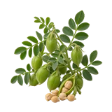

होम / चना

चना का भाव आज | Gram Mandi Price Today
चना के आज के उपलब्ध मंडी भाव देखें—इंदौर, उज्जैन और कोटा के मॉडल, न्यूनतम और अधिकतम रेट।
नीचे मंडी-वार सूची में चना के उपलब्ध भाव दिए हैं। मंडी के नाम पर क्लिक करके उस मंडी की दूसरी फसलों के भाव भी देख सकते हैं।
चने के मंडी भाव को प्रभावित करने वाले मुख्य कारक और अधिकतम भाव पाने के सुझाव
राम राम किसान भाइयों! भारतीय कृषि और दलहन बाजार में चना (Gram / Chickpea) दलहनी फसलों का राजा माना जाता है। राजस्थान, मध्य प्रदेश, महाराष्ट्र, गुजरात और उत्तर प्रदेश जैसे प्रमुख राज्यों के किसानों के लिए चना सबसे मुख्य और भरोसेमंद रबी नकदी फसल है। दालों की दैनिक घरेलू खपत, बेसन उद्योग और अंतरराष्ट्रीय बाजारों में भारतीय चने की निरंतर मांग बनी रहने के कारण देशभर की कृषि उपज मंडियों में चने का व्यापार हमेशा तेज और सक्रिय रहता है।
आज का चना मंडी भाव कैसे देखें
इस पेज पर मंडी-वार चने का भाव प्रति क्विंटल (100 किलो) में दिया जाता है। अपनी नज़दीकी मंडी के साथ-साथ दूसरी मंडियों के चने के रेट की तुलना करके बेचने का फैसला लेना ज्यादा फायदेमंद रहता है।
- अपना राज्य और नज़दीकी मंडी चुनकर आज का चना भाव देखें।
- न्यूनतम भाव, मॉडल भाव और अधिकतम भाव, तीनों का अंतर समझें।
- देशी चना और काबुली चने का भाव अलग-अलग देखें, क्योंकि दोनों के रेट में काफी अंतर रहता है।
- एक ही दिन अलग-अलग मंडियों में चने का रेट अलग हो सकता है, इसलिए कम से कम 2 से 3 मंडियों के भाव मिलाएं।
- पिछले दिनों के उपलब्ध भावों से देखें कि चने के रेट में तेजी का रुख है या मंदी का।
चने के मंडी भाव को प्रभावित करने वाले मुख्य कारक
मंडियों में चने के दैनिक भाव केवल स्थानीय आवक पर निर्भर नहीं करते, बल्कि कई प्रमुख व्यापारिक और गुणवत्ता संबंधी कारकों से तय होते हैं:
किस्म और ग्रेड (देशी चना बनाम काबुली/डॉलर चना)
- देशी चना (Desi Chana): इसका उपयोग मुख्य रूप से दाल मिलों में चना दाल और बेसन तैयार करने के लिए होता है। इसकी मांग पूरे साल स्थिर बनी रहती है।
- काबुली / डॉलर चना (Kabuli / Dollar Gram): बड़े और सफेद दाने वाले काबुली या डॉलर चने की मांग बड़े शहरों, होटल-कैटरिंग इंडस्ट्री और विदेशों में निर्यात के लिए बहुत ज्यादा होती है। यही वजह है कि काबुली चने के मंडी भाव देशी चने की तुलना में काफी ऊंचे रहते हैं।
नमी, चमक और दानों का आकार
- खरीददार और दाल मिल मालिक बोली लगाते समय माल की चमक, दाने की मोटाई और उसमें नमी का स्तर सबसे पहले परखते हैं।
- अच्छी तरह सुखाए गए, बिना घुन और बिना कटे-फटे दानों वाले चने को व्यापारी हमेशा अधिकतम और प्रीमियम भाव पर खरीदते हैं। वहीं अधिक गीले या मिट्टी मिले माल पर भाव कटकर मिलता है।
दाल मिलों की मांग और स्टॉक सीमा (Stock Limits)
- देश की प्रमुख दाल मिलों (इंदौर, बीकानेर, कटनी, जलगांव, दिल्ली) की दैनिक लेवाली जितनी मजबूत होती है, हाजिर मंडियों में चने के दाम में उतनी ही तेजी आती है।
- इसके अलावा केंद्र सरकार द्वारा दलहन की उपलब्धता और महंगाई को नियंत्रित करने के लिए उठाए जाने वाले कदम (जैसे स्टॉक लिमिट या आयात नीतियां) भी बाजार के रुख को सीधे प्रभावित करते हैं।
सरकारी समर्थन मूल्य (MSP) और नैफेड खरीद
- केंद्र सरकार द्वारा घोषित न्यूनतम समर्थन मूल्य (MSP) चने के बाजार भाव को एक मजबूत आधार प्रदान करता है।
- जब सरकारी खरीद एजेंसियां (NAFED आदि) खरीद केंद्र शुरू करती हैं, तो खुले बाजार के व्यापारियों पर भी भाव सुधारने का दबाव बनता है, जिससे किसानों को प्रतिस्पर्धी दाम मिलते हैं।
आवक का दबाव और मौसमी चक्र
- मार्च से मई के दौरान जब रबी की नई फसल मंडियों में एक साथ उतरती है, तो भारी आवक के कारण कीमतों पर दबाव देखने को मिलता है। त्योहारों और शादियों के सीजन में मांग बढ़ने पर भाव में दोबारा सुधार दर्ज होता है।
चने का अधिकतम भाव पाने के लिए किसान भाइयों को सुझाव
- सफाई और ग्रेडिंग: थ्रेशर से निकालने के बाद चने को अच्छी तरह छानकर मिट्टी, कंकड़ और कचरा अलग कर लें। साफ-सुथरा चना सामान्य माल से ₹50 से ₹100 प्रति क्विंटल तक अधिक भाव दिलाता है।
- नमी पर नियंत्रण: मंडी में ले जाने से पहले चने को धूप में ठीक से सुखा लें। कम नमी रहने पर व्यापारी बिना किसी हिचकिचाहट के ऊंची बोली लगाते हैं और तौल में भी कटौती का जोखिम नहीं रहता।
- विभिन्न मंडियों के मॉडल भाव की तुलना: अपनी नजदीकी मंडी के साथ-साथ आसपास की प्रमुख कृषि उपज मंडियों के मॉडल भाव और दैनिक रुझान पर नजर रखकर ही अपनी उपज की बिक्री का निर्णय लें।
चने का मॉडल भाव क्या होता है
मंडी भाव की तालिका में न्यूनतम और अधिकतम भाव के बीच एक मॉडल भाव भी दिया जाता है। मॉडल भाव उस भाव को कहते हैं जिस पर उस दिन मंडी में सबसे ज्यादा सौदे हुए। इसलिए सामान्य क्वालिटी का चना बेचने वाले किसान भाइयों के लिए मॉडल भाव, सबसे ऊंचे अधिकतम भाव के मुकाबले, अपने माल के रेट का बेहतर अंदाजा देता है। अधिकतम भाव आमतौर पर सबसे बढ़िया क्वालिटी के छोटे lot को मिलता है।
देशी चना और काबुली चना भाव में अंतर
- देशी चना और काबुली चना अलग-अलग किस्में हैं, इसलिए दोनों का मंडी भाव अलग-अलग बोला जाता है। भाव देखते समय किस्म जरूर मिलाएं।
- काबुली चने में दाने के आकार (साइज) के हिसाब से भी भाव अलग हो सकता है, इसलिए बेचने से पहले अपने माल का दाना किस श्रेणी में आता है, यह व्यापारी से पूछ लें।
- देशी चने में रंग, चमक और साफ-सफाई के आधार पर भाव ऊपर-नीचे होता है।
चने का MSP और मंडी भाव में अंतर
- MSP सरकार द्वारा तय किया गया न्यूनतम समर्थन मूल्य है, जबकि मंडी भाव रोज़ मांग और आपूर्ति के हिसाब से बदलने वाला खुले बाजार का रेट है।
- चने का MSP हर साल रबी सीजन के लिए नए सिरे से घोषित होता है, इसलिए ताजा MSP सरकारी स्रोत या अपने जिले के कृषि कार्यालय से जरूर जाँचें।
- सरकारी खरीद केंद्र पर बेचने के लिए आमतौर पर पंजीकरण, तय गुणवत्ता की शर्तें और खरीद की तय सीमा लागू होती है। इनकी जानकारी खरीद शुरू होने से पहले देख लें।
- जब मंडी में चने का भाव MSP से नीचे चला जाए, तब सरकारी खरीद का विकल्प किसान भाइयों के लिए खास तौर पर काम आता है।
चना बेचने से पहले चेकलिस्ट
- बेचने से पहले आज के चने के भाव की कम से कम दो-तीन नज़दीकी मंडियों से तुलना करें।
- माल की नमी, घुन और सफाई की जाँच खुद कर लें, ताकि बोली के समय भाव में अनावश्यक कटौती न हो।
- अपना चना देशी है या काबुली और दाने का आकार क्या है, यह बोली से पहले साफ कर लें।
- तौल की पर्ची और बिक्री की रसीद जरूर लें और उसमें वजन, भाव व तारीख मिलाकर देखें।
- भुगतान कब और किस तरीके से होगा, यह पहले ही साफ कर लें।
- ढुलाई, तुलाई, हम्माली और मंडी शुल्क जैसे खर्च जोड़कर ही शुद्ध भाव का हिसाब लगाएं।
चने के भाव से जुड़े आम सवाल (FAQ)
सवाल: चने का भाव रोज़ क्यों बदलता है? जवाब: चने का भाव मंडी की आवक, माल की गुणवत्ता, दाल मिलों की लेवाली, सरकार की स्टॉक लिमिट और आयात नीति तथा त्योहार-शादी के सीजन की मांग के अनुसार रोज़ बदलता है।
सवाल: देशी चना और काबुली चने के भाव में फर्क क्यों होता है? जवाब: देशी चना मुख्य रूप से चना दाल और बेसन के लिए इस्तेमाल होता है, जबकि बड़े और सफेद दाने वाले काबुली चने की मांग बड़े शहरों, होटल-कैटरिंग और निर्यात में ज्यादा है। इसी वजह से काबुली चने के भाव देशी चने से ऊंचे रहते हैं।
सवाल: चने का भाव प्रति क्विंटल क्यों बताया जाता है? जवाब: मंडियों में अनाज और दलहन का भाव प्रति क्विंटल यानी 100 किलो के हिसाब से बोला जाता है। प्रति किलो भाव निकालने के लिए क्विंटल भाव को 100 से भाग दें।
सवाल: चने के भाव सबसे ज्यादा दबाव में कब रहते हैं? जवाब: मार्च से मई के दौरान, जब रबी की नई फसल एक साथ मंडियों में आती है, तो भारी आवक के कारण भाव पर दबाव देखने को मिलता है।
सवाल: चने का MSP और मंडी भाव में क्या फर्क है? जवाब: MSP सरकार द्वारा घोषित न्यूनतम समर्थन मूल्य है, जबकि मंडी भाव खुले बाजार में रोज़ की मांग-आपूर्ति से तय होने वाला रेट है।
चने का दैनिक भाव और बाजार का रुख
चने के बाजार भाव में दैनिक आवक और दाल बाजार की मांग के अनुसार बदलाव होते रहते हैं। बाजार के रुख और अपनी उपज की गुणवत्ता को समझकर सौदा करने से किसान भाई अपनी उपज का पूरा और वाजिब मूल्य प्राप्त कर सकते हैं।
ध्यान दें: माल की गुणवत्ता, नमी, दाने के आकार और बोली के समय के अनुसार आपको मिलने वाला वास्तविक रेट इस पेज पर दिखे भाव से कम-ज्यादा हो सकता है, इसलिए सौदा करने से पहले अपनी स्थानीय मंडी में भाव की पुष्टि जरूर कर लें।